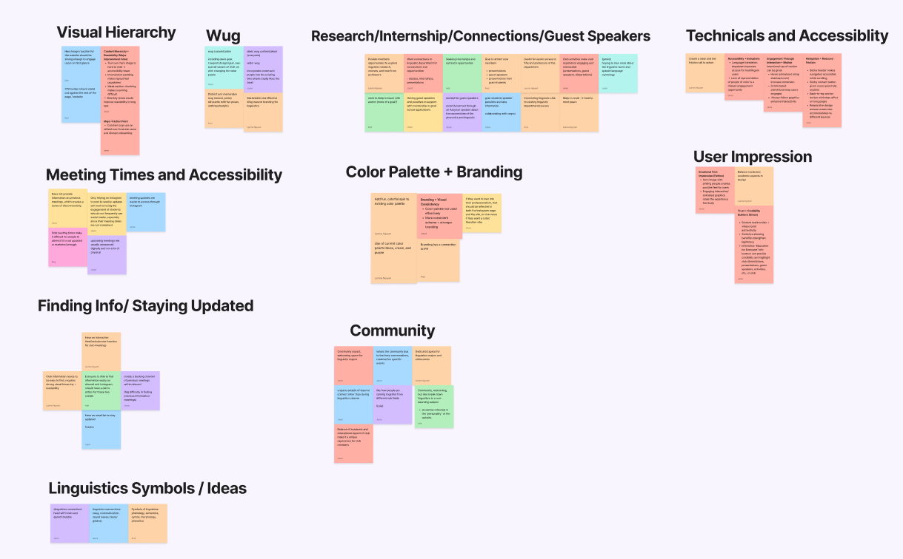
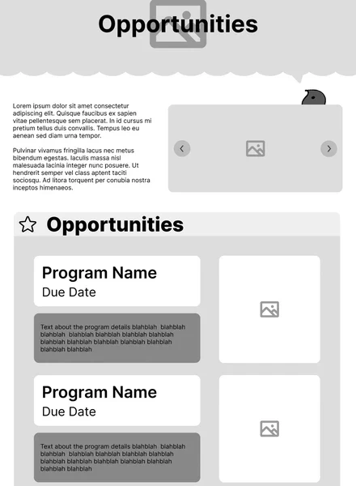
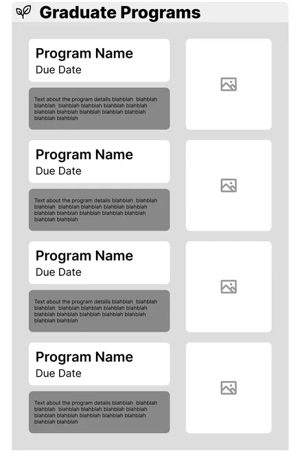
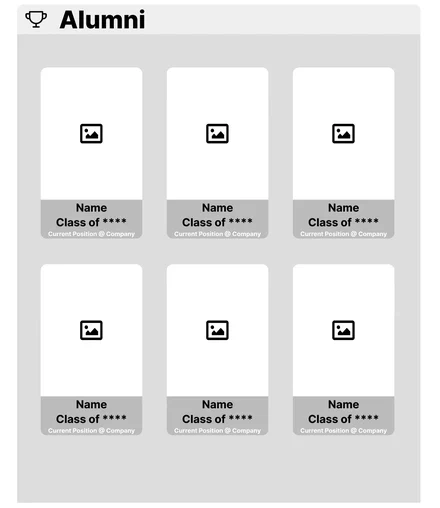
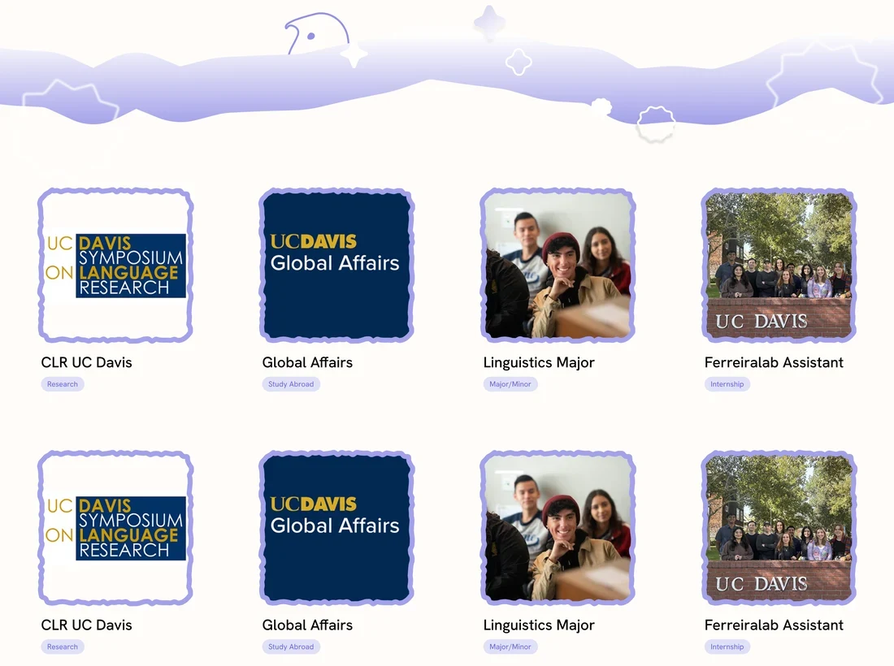
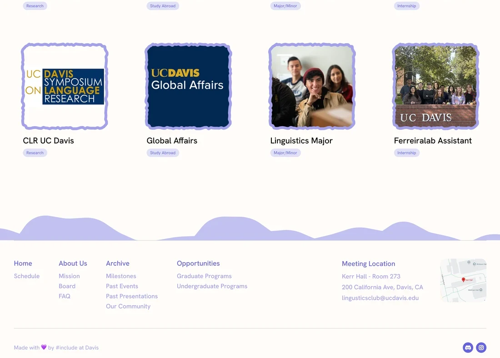
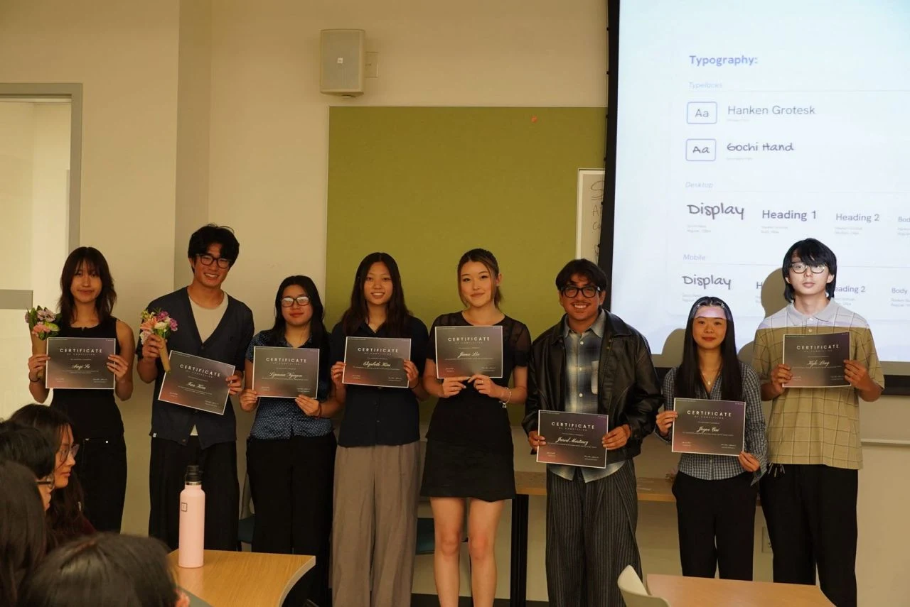

A brand-new club needed to show linguistics students where their major could lead
Linguistics is a small major at UC Davis, and its club was brand new. With few upperclassmen to ask and no established network to lean on, students had little sense of the research, study abroad, internships and grad programs open to them, so the club needed to give them a clear path from day one.
Through a two-quarter #Include design cohort, our team of 14 was challenged to build the club its first website. As one of 5 designers, I owned the pages that help students find opportunities in the major. My contributions included:
- Owned the Opportunities pages across 3 design sprints, taking them from lo-fi sketches to hi-fi prototypes.
- Researched the opportunities UC Davis offers linguistics students, interviewing department professors and TAs, and helped shape the site’s information architecture.
- Refined the pages across 6 usability tests, splitting Opportunities into undergrad and grad tracks so they became 80% easier to find.
Research, study abroad and career paths existed, but students couldn’t see them
In a small major, students can’t count on a big community to pass down what’s possible, and a brand-new club had no history to point to. For its 150+ students, from undergrads to grad students, that left linguistics feeling abstract: they didn’t know which research, study abroad or careers it could lead to, or where to start. A clear pathway wasn’t a nice-to-have; it was the club’s first job.
How might we make career and research pathways in linguistics transparent, tangible, and easy for students to navigate?
- A brand-new clubNo alumni or past events to feature yet.
- 3 design sprintsTwo quarters, shared across 5 designers.
- Built by studentsDesigns had to stay feasible for 7 developers.
Interviews showed students commit to paths they can picture, not paragraphs they read
Beyond club members and board representatives, I interviewed professors, TAs and staff in the Linguistics Department and researched the programs, labs and opportunities UC Davis offers linguistics students. I also ran a SWOT analysis of 6+ club websites, and we sorted every note into themes over three rounds of affinity mapping.

- Information structure. Text-heavy, unstructured pages with no archive of past events.
- Navigation. Hidden calls to action, so events and resources were hard to discover.
- Visual hierarchy. Weak hierarchy and inconsistent type made pages hard to scan.
- Engagement. Static content gave students little reason to come back.
Why it matters: students commit to paths they can picture, so I designed the Opportunities pages to make every program feel concrete: a photo, a name and a type, side by side.
Testing showed dense listings overwhelmed students, so I made every program quick to scan and compare
What didn’t work
We put the mid-fi Opportunities page in front of students in usability testing. The visual density created more friction than help in three places:
1No clear place to start

- Students landed on a wall of text
- Usability test · Mid-fiNo search or filters to guide them
2Three heavy boxes for every program

- Every detail of a program in one place
- Usability test · Mid-fiA name box, text block and image box made each listing heavy
- The same pattern repeated in every section
3An alumni section we couldn’t fill

- Shows where the major can lead
- The club is too new to have alumni to feature
What I chose
I gave the page one clear starting point and lightened every listing, so students could browse instead of dig:
1Put search and filters first
- Students jump straight to the programs they want
- Client reviewPlaced right under the title after talking with the client
2One light card per program

One card per program- Just a photo, a title and a tag
- An open grid that eases visual strain
3Kept the page on current opportunities

Ends on current programs- No empty sections waiting on content the club doesn’t have yet
The result: undergrad and grad tracks that made opportunities 80% easier to find
The final Opportunities section opens with a program search and filters, then lays every program out as a light card students can scan, with separate undergrad and grad tracks, which made opportunities 80% easier to find across 6 usability tests. We delivered 3 key pages across 3 design sprints for the club’s 150+ students.
Then I made it easy to act on what they found
Finding a program is only half the job, so every page makes it easy for students to act on what they find:
1Save a program, or go straight to it
- Saving stars the program on the list, so students can come back to it later
- One link to the program’s own site, with no searching around
2A mailing list so students never miss an opportunity
- Meeting reminders, new opportunities and event invites come to students
- Hints under each field prevent mistakes, like using a non-UC Davis email
Try it all below: search and filter, open a program and save it, or switch between Undergraduate and Graduate from the menu. Toggle Desktop to see the same flow in a browser.
What I’m taking forward: design for people, and keep the experts close
- Design for people, not just screens. My first real client taught me to look past how a page looks to whether students can actually find what they came for.
- Keep the experts close. Professors and TAs knew paths students had never heard of. With more time, I’d keep that conversation going with the club to surface even more opportunities.
Thank you to my wonderful team!
A big thank you to my #Include teammates and co-leads, and to UC Davis Linguistics Club for trusting us with their first website.
